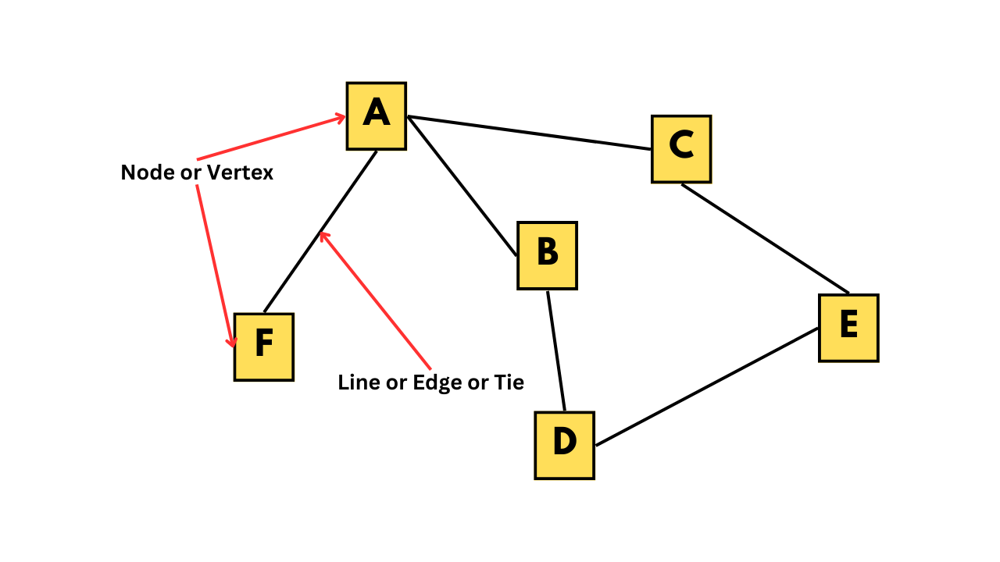
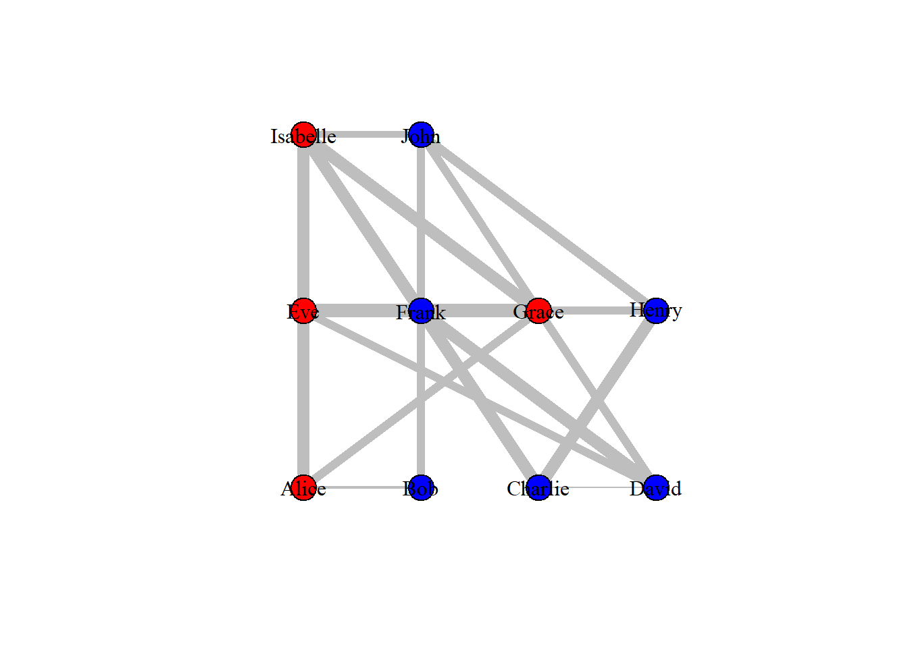
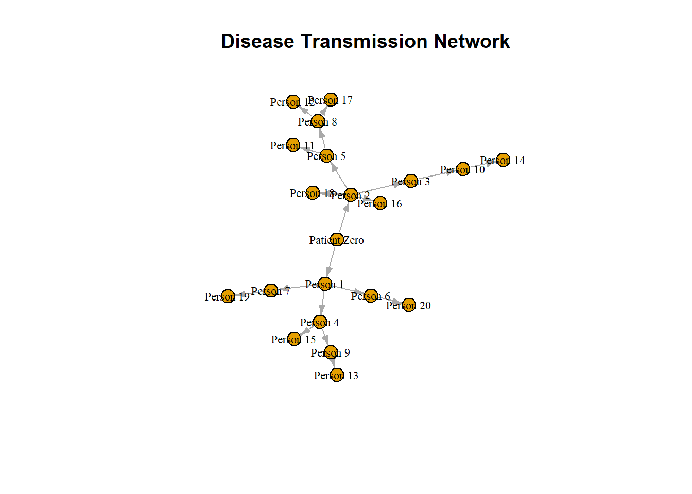
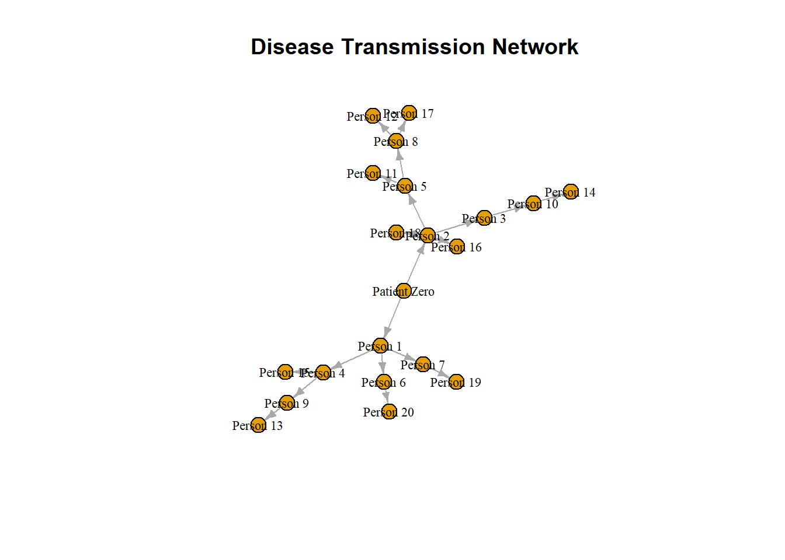
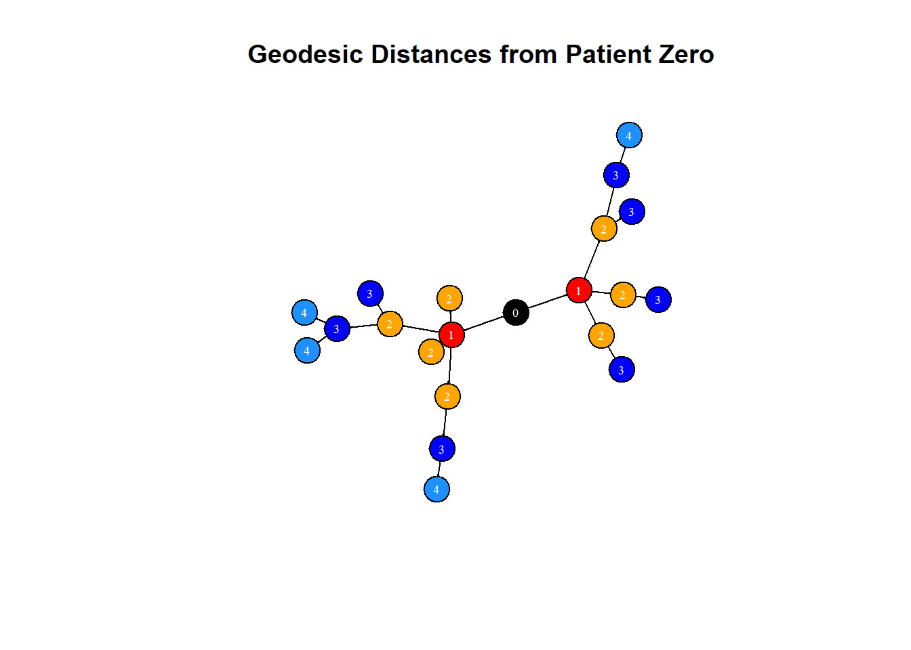
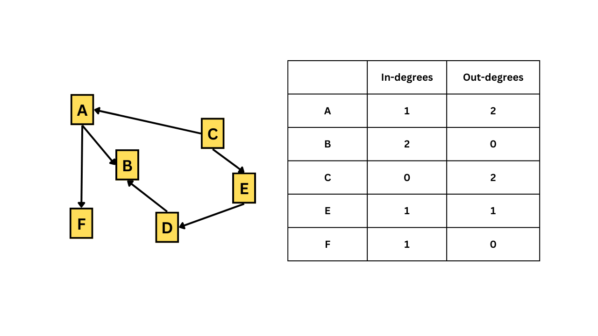
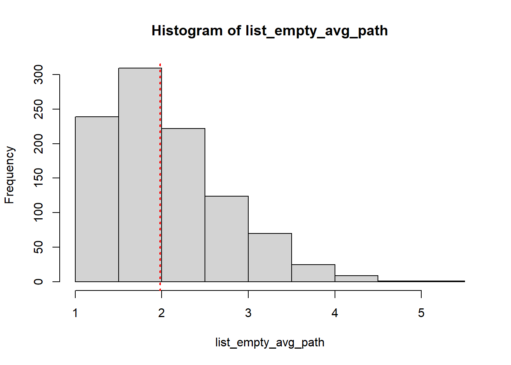
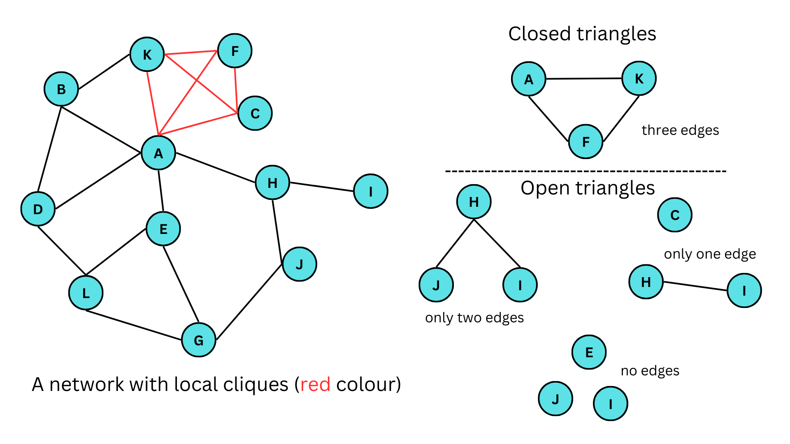
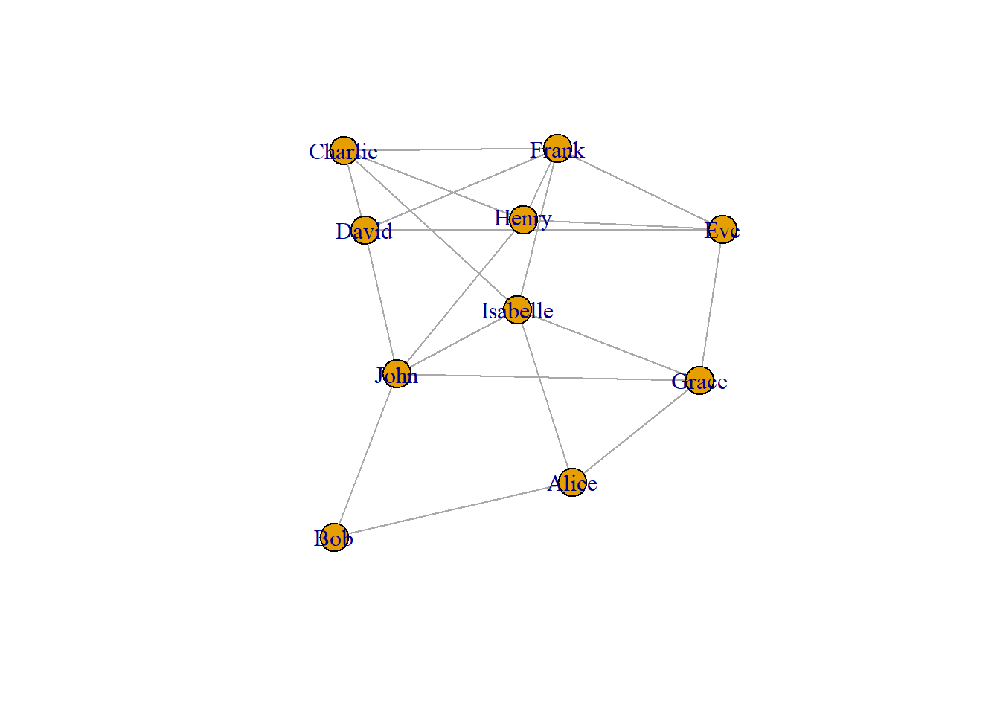

What is a network and what are the different ways to denote the network data?
How to convert the network data into an igraph object to analyze and plot the network via the {igraph} package in R.
What are vertex and edge attributes and how do we add them to the igraph object?
How do we filter network attributes and how to visualize them?
What are the different types of network visualizations?
What are directed networks?
What is path length?
What are the different measures of network structure?
What is network randomization test and what is its purpose?
what are the different network substructures?
How to identify special relationships in the network?
How to find communities in a network?
How to visualize the network in 3D using the {threejs} package
We will be using the {igprah} and {threejs} packages in this tutorial.
1 Introduction
In this tutorial, we will explore social networks and how to create and analyze them. A social network is a graphical representation of relationships between a group of individuals. For instance, the figure below shows a social network that could represent friendships among a group of people, bus routes to different locations in a city, or connections between different neurons.

A graph depicting a social network
If we take a closer look at the figure, we can see that individual A has some kind of relationship with individuals B, C, and F, but not with D and E. The individuals, such as A, B, C, and so on, are called nodes or vertices, while the connections between them are known as lines, edges, or ties.
Network data can be represented in different forms, such as an adjacency matrix or an edge list. The adjacency matrix for the network shown in the figure is provided below. In this matrix, each row and column corresponds to a vertex, and a value of 1 indicates the presence of an edge between the corresponding vertices.
Code for making the adjacency matrix for the above figure
[,1] [,2]
[1,] "a" "b"
[2,] "a" "c"
[3,] "a" "f"
[4,] "b" "d"
[5,] "c" "e"
[6,] "d" "e"
The edge list provided above displays each relationship or edge in the given social network through its rows. To gain a better understanding of how we can analyze and plot such data, let’s work with a dataset resembling a real-life scenario.
2 Creating a dummy dataframe
We will work with a synthetic dataset consisting of 10 individuals and their relationships, gender, and weekly call duration. This will allow us to explore how social network analysis can be applied to real-life scenarios. The dataset includes friendships between individuals and other attributes such as gender and call duration. Below is the code used to generate this dataset.
# set seed for reproducibilityset.seed(123)# Create a dataframe with 10 names and genderdf_names <-data.frame(name =c("Alice", "Bob", "Charlie", "David", "Eve", "Frank","Grace", "Henry", "Isabelle", "John"),gender =c("F", "M", "M", "M", "F", "M", "F", "M", "F", "M"))# Create an empty dataframe to store the relationshipsdf_rel <-data.frame(name1 =character(), name2 =character(),call_hours =numeric()) # Generate random relationships with call hourswhile (nrow(df_rel) <20) {# Randomly select two names name1 <-sample(df_names$name, 1) name2 <-sample(df_names$name, 1)# Check if the selected names are the same or have already been added to the dataframeif (name1 != name2 &!any((df_rel$name1 == name1 & df_rel$name2 == name2) | (df_rel$name1 == name2 & df_rel$name2 == name1))) { # Add the relationship with a random number of call hours between 1 and 10 df_rel <-rbind(df_rel, data.frame(name1 = name1, name2 = name2,call_hours =sample(1:10, 1))) }}# Finally our datasetdf_rel
1
First, the code creates a dataframe called df_names with 10 names and their genders.
2
Then, an empty dataframe called df_rel is created to store the relationships.
3
The while loop is used to generate random relationships between the names until df_rel has 20 rows.
4
Inside the while loop, two names are randomly selected from the name column of df_names using the sample function.
5
The if statement checks whether the two names are the same or whether they have already been added as a relationship to df_rel. If either of these conditions is true, the loop moves on to select a new pair of names.
6
If the two names are different and have not been added to df_rel, a new row is added to df_rel with the selected names and a randomly generated number between 1 and 10 as the number of call hours.
7
Once df_rel has 20 rows, the loop stops, and the final dataframe is printed using print(df_rel).
3 Converting dataframe to network data
To convert our dataframe into network data, we’ll be using the {igraph} package in R and the graph.edgelist() function. However, before we can do that, we need to make sure that our dataframe is in the right format. The graph.edgelist() function requires a 2x2 edge list matrix, which means that our dataframe needs to be converted to a matrix using the as.matrix() function. For now, we’ll also remove the call_hours column.
# Installing and loading the igraph packageif (!require(igraph)) install.packages('igraph')library(igraph)# Creating an igraph objectdf_rel_mx <-as.matrix(df_rel[,1:2])df_rel_ig <-graph.edgelist(df_rel_mx, directed = F)# Viewing the igraph objectdf_rel_ig
IGRAPH 53fc946 UN-- 10 20 --
+ attr: name (v/c)
+ edges from 53fc946 (vertex names):
[1] John --Bob Eve --David John --Isabelle Isabelle--Charlie
[5] John --Henry David --Charlie Eve --Grace Isabelle--Grace
[9] John --Grace Isabelle--Frank Eve --Henry Isabelle--Alice
[13] Eve --Frank John --David Henry --Frank Grace --Alice
[17] Bob --Alice Charlie --Frank David --Frank Charlie --Henry
In the first line of the output, the first number; 10 indicates that there are 10 vertices, and 20 means that there are 20 edges in the network.
Starting from the 4th line of the output, all the edges in the network are shown. These are relationships in the dataset.
Now let us plot the network using the plot() function.
plot(df_rel_ig)
In the above graph, each person is represented as a vertex, shown in blue. The edges between them indicate that they are friends with each other.
The {igraph} package provides various functions to further analyze the network data. For instance, we can use the V() function to view the vertices in the dataset.
# Viewing the nodes/verticesV(df_rel_ig)
+ 10/10 vertices, named, from 53fc946:
[1] John Bob Eve David Isabelle Charlie Henry Grace
[9] Frank Alice
Similarly, using the E() function returns all the edges.
# Viewing the edgesE(df_rel_ig)
+ 20/20 edges from 53fc946 (vertex names):
[1] John --Bob Eve --David John --Isabelle Isabelle--Charlie
[5] John --Henry David --Charlie Eve --Grace Isabelle--Grace
[9] John --Grace Isabelle--Frank Eve --Henry Isabelle--Alice
[13] Eve --Frank John --David Henry --Frank Grace --Alice
[17] Bob --Alice Charlie --Frank David --Frank Charlie --Henry
To get the number of vertices we can use gorder() and for getting the number of edges we can use gsize().
# Viewing the no. of verticesgorder(df_rel_ig)
[1] 10
# Viewing the no. of edgesgsize(df_rel_ig)
[1] 20
4 Network attributes
4.1 Vertex attributes
Let us once again look at the igraph object output for the data we are using.
# Viewing the igraph objectdf_rel_ig
IGRAPH 53fc946 UN-- 10 20 --
+ attr: name (v/c)
+ edges from 53fc946 (vertex names):
[1] John --Bob Eve --David John --Isabelle Isabelle--Charlie
[5] John --Henry David --Charlie Eve --Grace Isabelle--Grace
[9] John --Grace Isabelle--Frank Eve --Henry Isabelle--Alice
[13] Eve --Frank John --David Henry --Frank Grace --Alice
[17] Bob --Alice Charlie --Frank David --Frank Charlie --Henry
In the second line of the output, we can see the attributes of the vertices. The network attributes can be either categorical or numerical. In this case, the attribute ‘name’ is a categorical variable denoting a person’s name as vertices. Examples of numerical attributes include the age of an individual, the population of a city, or revenue of a company, etc.
The vertex attributes can be visualized using different shapes, colors, or sizes of the shape. To add a vertex attribute, we can use the set_vertex_attr() function. In the function arguments, we first input the igraph object, then the attribute name that we choose to give, which in this case would be ‘gender’, and finally the values for that attribute. Therefore, we use our df_names dataframe that we created before to fetch the gender data as the vertex attribute.
# Our dataframe with 10 names and genderdf_names <-data.frame(name =c("Alice", "Bob", "Charlie", "David", "Eve", "Frank","Grace", "Henry", "Isabelle", "John"),gender =c("F", "M", "M", "M", "F", "M", "F", "M", "F", "M"))# Adding 'gender' as a vertex attributedf_rel_ig_gender <-set_vertex_attr(df_rel_ig, "gender", value = df_names$gender)# Viewing the igraph objectdf_rel_ig_gender
IGRAPH 53fc946 UN-- 10 20 --
+ attr: name (v/c), gender (v/c)
+ edges from 53fc946 (vertex names):
[1] John --Bob Eve --David John --Isabelle Isabelle--Charlie
[5] John --Henry David --Charlie Eve --Grace Isabelle--Grace
[9] John --Grace Isabelle--Frank Eve --Henry Isabelle--Alice
[13] Eve --Frank John --David Henry --Frank Grace --Alice
[17] Bob --Alice Charlie --Frank David --Frank Charlie --Henry
In the igraph object output, in the second line, you can see that a new vertex attribute called ‘gender’ has been added, which is denoted by ‘gender (v/c)’.
4.2 Edge attributes
Similar to vertex attributes, edges can also convey different information. The common form of edge attribute is by changing the width of the line connecting the vertices. Therefore, we can convey information such as the number of bus routes between two places or the number of phone calls between two friends by changing the width size.
In our case, we can denote edge width to denote the call hours between two people. Similar to the previous case, we can use the set_edge_attr() function. The arguments for this function are similar to set_vertex_attr(), which we saw earlier.
We extract the call hour information from the df_rel dataframe that we created earlier.
# Adding 'donations' as an edge attributedf_rel_ig_call <-set_edge_attr(df_rel_ig, "call_hours",value = df_rel$call_hours)# Viewing the igraph objectdf_rel_ig_call
IGRAPH 53fc946 UN-- 10 20 --
+ attr: name (v/c), call_hours (e/n)
+ edges from 53fc946 (vertex names):
[1] John --Bob Eve --David John --Isabelle Isabelle--Charlie
[5] John --Henry David --Charlie Eve --Grace Isabelle--Grace
[9] John --Grace Isabelle--Frank Eve --Henry Isabelle--Alice
[13] Eve --Frank John --David Henry --Frank Grace --Alice
[17] Bob --Alice Charlie --Frank David --Frank Charlie --Henry
Similar to the previous case, a new edge attribute called ‘donations’ have been added denoted by ‘donations (e/n)’.
4.3 One-shot way to add attributes
We can use the graph_from_data_frame() function from the {igraph} package to create an igraph object directly if we have the vertex and edge information as separate dataframes. In the function arguments, the d parameter takes the edge list dataframe, where the first two columns contain the edges and the third column represents the edge attribute. Similarly, the vertices parameter takes the dataframe for vertex attributes, where the first column represents the vertices, and the remaining columns represent the vertex attributes.
In our case, we can use the df_rel dataframe for the d parameter, where the first two columns represent the edges, and the third column represents the call hours attribute. For the vertices parameter, we can use the df_names dataframe, where the first column represents the vertices (person names), and the second column represents the vertex attribute (gender). By using graph_from_data_frame() function, the vertex and edge attributes will be added to the igraph object automatically.
# Adding the attributesdrug_ig_complete <-graph_from_data_frame(d = df_rel, vertices = df_names,directed = F)# Viewing the igraph objectdrug_ig_complete
IGRAPH 548bb9e UN-- 10 20 --
+ attr: name (v/c), gender (v/c), call_hours (e/n)
+ edges from 548bb9e (vertex names):
[1] Bob --John David --Eve Isabelle--John Charlie --Isabelle
[5] Henry --John Charlie --David Eve --Grace Grace --Isabelle
[9] Grace --John Frank --Isabelle Eve --Henry Alice --Isabelle
[13] Eve --Frank David --John Frank --Henry Alice --Grace
[17] Alice --Bob Charlie --Frank David --Frank Charlie --Henry
We can also use the functions; vertex_attr() to view the vertex attributes and edge_attr() to view edge attributes.
With different attributes in the network, we can use different filters and see the data differently. Suppose we can want to see what all edges include “John”.
# Viewing all friends of JohnE(drug_ig_complete)[[.inc('John')]]
+ 5/20 edges from 548bb9e (vertex names):
tail head tid hid call_hours
1 Bob John 2 10 6
3 Isabelle John 9 10 5
5 Henry John 8 10 7
9 Grace John 7 10 5
14 David John 4 10 6
The output shows all friends of John.
Let us also check which friends call for more than 5 hours.
# Viewing relationships with call hours of more than 5 hoursE(drug_ig_complete)[[call_hours >5]]
+ 14/20 edges from 548bb9e (vertex names):
tail head tid hid call_hours
1 Bob John 2 10 6
2 David Eve 4 5 6
4 Charlie Isabelle 3 9 9
5 Henry John 8 10 7
7 Eve Grace 5 7 10
8 Grace Isabelle 7 9 9
12 Alice Isabelle 1 9 9
13 Eve Frank 5 6 9
14 David John 4 10 6
15 Frank Henry 6 8 6
16 Alice Grace 1 7 6
18 Charlie Frank 3 6 9
19 David Frank 4 6 9
20 Charlie Henry 3 8 9
There are 12 friendships where people call each other for more than 5 hours.
6 Visualizing the attributes
There are various ways to visualize both vertex and edge attributes in a network. For numerical attributes, we can change the size of the vertices and the width of the edges. For categorical attributes, we can change the color and shape of the vertices, and the line type and color of the edges.
Different ways to visualize network attributes
6.1 Vertex attributes
With different attributes, we can also visualize them in the network graph in different ways. In the code given below, we assign color values to each of the vertices in the network depending on their gender. Here females will be coded as red and males as blue.
# Setting vertex color to genderV(drug_ig_complete)$color <-ifelse(V(drug_ig_complete)$gender =='F', "red", "blue")# Plotting the networkplot(drug_ig_complete, vertex.label.color ="black")
6.2 Edge attributes
Edge attributes can be visualized in the network by changing the line type, color or by changing the width. In the code given below, we change the line width depending on the call hours between vertices (or friends).
In the above graph, the line width is directly proportional to the call hours between the vertices. Higher line width corresponds to a greater number of call hours between friends.
7 Network Visualizations
Just like how we can customize different network attributes, we can also change the way our network is visualized based on our data. For instance, if we are interested in sequential events or relationships between family members, then visualizing our network in a tree form would be better than the normal way. The layout argument in the plot() function can take different types of layout functions given in the {igraph} package, providing us with a range of ways to visualize our networks. To create a tree network, we can use the function layout_as_tree(). Below are some popular ways to visualize networks.
# Plotting the graph in tree formplot(drug_ig_complete, vertex.label.color ="black", edge.color ='grey',edge.width = call_hours, layout =layout_as_tree(drug_ig_complete))
Place vertices on a circle, in the order of their vertex ids.
# Plotting the graph in circle formplot(drug_ig_complete, vertex.label.color ="black", edge.color ='grey',edge.width = call_hours, layout =layout_in_circle(drug_ig_complete))
DrL is a force-directed graph layout toolbox focused on real-world large-scale graphs.
# Plotting the graph in DrL graph layoutplot(drug_ig_complete, vertex.label.color ="black", edge.color ='grey',edge.width = call_hours, layout =layout_with_drl(drug_ig_complete))
Place vertices on the plane using the force-directed layout algorithm by Fruchterman and Reingold.
# Plotting the graph in Fruchterman-Reingold graph layoutplot(drug_ig_complete, vertex.label.color ="black", edge.color ='grey',edge.width = call_hours, layout =layout_with_fr(drug_ig_complete))
This layout places vertices on a rectangular grid, in two or three dimensions.
# Plotting the graph in grid layoutplot(drug_ig_complete, vertex.label.color ="black", edge.color ='grey',edge.width = call_hours, layout =layout_on_grid(drug_ig_complete))

Alternatively, if we are unsure of which layout is best for the network at hand, we can use the function layout_nicely() which will assign the best layout automatically.
# Plotting the graph in tree formplot(drug_ig_complete, vertex.label.color ="black", edge.color ='grey',edge.width = call_hours, layout =layout_nicely(drug_ig_complete))
8 Directed networks
Network graphs can be either undirected or directed. Undirected graphs represent relationships between vertices as simply existing between them, whereas directed graphs indicate that the relationships have a direction. Examples of directed networks include disease outbreak data, family relationships, and school friendship networks.
Let’s create a dummy dataset to illustrate directed networks. We’ll generate data on a disease outbreak that occurred in a community of 20 people.
Code for making the dummy data
# Set seed for reproducibilityset.seed(123)# create a data frame with two columns to store the information about the spread of the diseaseinfection_df <-data.frame(Infected=character(), Infected_By=character(), stringsAsFactors=FALSE)# set the number of infected peoplenum_infected <-20# initialize the first infected personinfected <-c("Patient Zero")# Loop over the remaining infected people and add them to the data framefor (i in1:num_infected) {# randomly choose the person infected by the current infected person infected_by <-sample(infected, 1)# add the currently infected person and the person infected by them to the data frame infection_df <-rbind(infection_df, data.frame(Infected=paste("Person", i),Infected_By=infected_by, stringsAsFactors=FALSE))# add the currently infected person to the list of infected people infected <-c(infected, paste("Person", i))}# Interchanging the columnsinfection_df <- infection_df[, c("Infected_By", "Infected")]# print the first few rows of the resulting data framehead(infection_df)
The dataframe infection_df contains data on 21 individuals (20 people and 1 patient zero). The infection starts with patient zero, which then spreads across the community. The dataframe has two columns: “Infected_By” indicates the person who is transmitting the disease, and “Infected” shows the person who is getting infected by that transmission.
Now, let’s plot the above dataframe as a network graph.
library(igraph)# create a graph object from the dataframegraph <-graph_from_data_frame(infection_df, directed=TRUE)# plot the graphplot(graph, vertex.label.color="black", vertex.size=10, vertex.label.cex=0.7,edge.arrow.size=0.5, main="Disease Transmission Network")

A notable difference from earlier graphs we have seen is that the edges now have an arrowhead indicating their direction. In the graph, the central node is “Patient Zero”, who is the first infected person in the community. The vertex “Patient Zero” has two outgoing edges, one going to “Person 1” and the other to “Person 2”. The arrowheads navigate us to show how the infection starting from “Patient Zero” infected the whole community. The directed=TRUE argument in the graph_from_data_frame() function tells R to create a directed igraph object. We can also check if a network is directed by using the is.directed() function.
library(igraph)# create a graph object from the dataframegraph <-graph_from_data_frame(infection_df, directed=TRUE)# print outputgraph
IGRAPH 57e39e8 DN-- 21 20 --
+ attr: name (v/c)
+ edges from 57e39e8 (vertex names):
[1] Patient Zero->Person 1 Patient Zero->Person 2 Person 2 ->Person 3
[4] Person 1 ->Person 4 Person 2 ->Person 5 Person 1 ->Person 6
[7] Person 1 ->Person 7 Person 5 ->Person 8 Person 4 ->Person 9
[10] Person 3 ->Person 10 Person 5 ->Person 11 Person 8 ->Person 12
[13] Person 9 ->Person 13 Person 10 ->Person 14 Person 4 ->Person 15
[16] Person 2 ->Person 16 Person 8 ->Person 17 Person 2 ->Person 18
[19] Person 7 ->Person 19 Person 6 ->Person 20
In the first line of the output, ‘DN’ stands for ‘Directed Network’, for undirected networks it will be ‘UN’ which we have seen before. We can also use the function is.directed() to check if the network is directed.
library(igraph)# create a graph object from the dataframegraph <-graph_from_data_frame(infection_df, directed=TRUE)# checking if it's directed or notis.directed(graph)
[1] TRUE
8.1 Identifying edges
Suppose we want to see if there is a disease transmission between person 2 and person 10. To check this we can use the following code;
# checking if an edge exists between person 2 and person 10graph['Person 2', 'Person 10']
[1] 0
The function returned 0, this means that there is no edge between the vertices that we were interested in. The function returns 1 if there exists an edge.
We can also see which edges go out from a vertex and go in into the vertex using the incident() function.
# printing all edged going out from patient zeroincident(graph, 'Patient Zero', mode =c("out"))
From the output, we can see that patient zero infects person 1 and person 2.
# printing all edges coming into person 3incident(graph, 'Person 3', mode =c("in"))
+ 1/20 edge from 57eecca (vertex names):
[1] Person 2->Person 3
From the output, we can see that person 3 was infected by person 2.
# printing all edges connected to person 5incident(graph, 'Person 5', mode =c("all"))
+ 3/20 edges from 57eecca (vertex names):
[1] Person 2->Person 5 Person 5->Person 8 Person 5->Person 11
From the output we can see that person 5 was infected by person 2 and thereafter person 5 goes on to infect person 8 and person 11.
We can also use the head_of() function to return the set of vertices that are at the beginning of the edges in the input. It gives the list of people who infected others.
# printing all vertices that are connected to an edgehead_of(graph, E(graph))
+ 20/21 vertices, named, from 57eecca:
[1] Person 1 Person 2 Person 3 Person 4 Person 5 Person 6 Person 7
[8] Person 8 Person 9 Person 10 Person 11 Person 12 Person 13 Person 14
[15] Person 15 Person 16 Person 17 Person 18 Person 19 Person 20
Here, patient zero is not included in the output because it is not connected to any edges in the graph. The head_of() function returns only the vertices that are connected to edges in the graph, and since patient zero does not have any outgoing edges, it is not included in the output.
8.2 Identifying the neighbors
To track the spread of a pandemic in a small community, we need to identify the individuals who were infected by patient zero. This can be accomplished by identifying the immediate neighbors of patient zero using the neighbors() function.
Here’s an example of how we can find the infected neighbors in R using the neighbors() function:
# finding the neighbors of patient zeroneighbors(graph, 'Patient Zero', mode =c("all"))
+ 2/21 vertices, named, from 57eecca:
[1] Person 2 Person 1
We can also see which neighbors are common for a particular vertex using the intersect() function.
# finding neighbors of person 1 x <-neighbors(graph, 'Person 1', mode =c('all'))# finding neighbors of person 2y <-neighbors(graph, 'Person 2', mode =c('all'))# finding common neighbors between person 1 and person 2intersection(x,y)
+ 1/21 vertex, named, from 57eecca:
[1] Patient Zero
8.3 Path length (Geodesic distance)
A measure to see how well a network is connected is to look at the length of the edges between all pairs of vertices. The length between a vertex and its immediate neighbor will be 1 and this is called path length or also known as geodesic distance. In our network graph, from patient zero to person 1, one connection is required to traverse, which means that the path length between them is 1. Between person 7 and patient zero the path length is 2.
# create a graph object from the dataframegraph <-graph_from_data_frame(infection_df, directed=TRUE)# plot the graphplot(graph, vertex.label.color="black", vertex.size=10, vertex.label.cex=0.7,edge.arrow.size=0.5, main="Disease Transmission Network")

A good way to see how deep the infection has traversed, we have to see the longest path in the network. This longest path is called the diameter of the network. To get the diameter of the network we can use the function farthest_vertices()
# finding the longest path in the networkfarthest_vertices(graph)
$vertices
+ 2/21 vertices, named, from 5852d47:
[1] Patient Zero Person 12
$distance
[1] 4
To see how the connections between patient zero and person 12 make up the longest path in the network we can use the function get_diameter()
# finding the longest path in the networkget_diameter(graph)
+ 5/21 vertices, named, from 5852d47:
[1] Patient Zero Person 2 Person 5 Person 8 Person 12
To calculate the geodesic distances of all vertices from a particular vertex, we can use the function distances().
# finding geodesic distances of all vertices from the vertex 'Patient Zero'distances(graph, "Patient Zero")
Patient Zero Person 2 Person 1 Person 5 Person 4 Person 3 Person 8
Patient Zero 0 1 1 2 2 2 3
Person 9 Person 10 Person 7 Person 6 Person 11 Person 12 Person 13
Patient Zero 3 3 2 2 3 4 4
Person 14 Person 15 Person 16 Person 17 Person 18 Person 19
Patient Zero 4 3 2 4 2 3
Person 20
Patient Zero 3
From the output, we can see how distance each vertex is away from patient zero. Person 1 and Person 2 seem to be immediate targets of disease transmission starting from patient zero and persons 12,13,14 and person 17 were the last people to be infected in the whole community.
We can also identify vertices that are reachable with N steps from a vertex of interest. Suppose we want to know vertices from patient zero that are reachable within 2 connections or 2 steps. We can use the ego() function for this task.
# finding vertices that are at min. 2 edges away from patient zeroego(graph, 2, 'Patient Zero', mode =c('all'))
[[1]]
+ 10/21 vertices, named, from 5852d47:
[1] Patient Zero Person 2 Person 1 Person 5 Person 3
[6] Person 16 Person 18 Person 4 Person 7 Person 6
Let us plot the network to visualize how far each vertex is from ‘Patient Zero’. First we use make_ego_graph() function to get a sub-graph containing all neighbors of Patient Zero which is reachable within the diameter of the network. This essentially includes all vertices that are connected to Patient Zero. Then we calculate the distances of vertices from Patient Zero. The diameter of this network is 4, but we add 4+1 colors, as ‘Patient Zero’ has zero distance, we suggest 5 colors so that ‘Patient Zero’ has its color. In the final plot, we have vertex labels to denote the geodesic distances from Patient Zero.
library(igraph)# Make an ego graphgraph_ego <-make_ego_graph(graph, diameter(graph), nodes ='Patient Zero', mode =c("all"))[[1]]# Get a vector of geodesic distances of all vertices from vertex Patient Zero dists <-distances(graph_ego, "Patient Zero")# Create a color palette of length equal to the maximal geodesic distance plus one.colors <-c("black", "red", "orange", "blue", "dodgerblue")# Set color attribute to vertices of network graph_egoV(graph_ego)$color <- colors[dists+1]# Visualize the network based on geodesic distance from patient zero.plot(graph_ego, vertex.label = dists, vertex.label.color ="white",vertex.label.cex = .6,edge.color ='black',vertex.size =15,edge.arrow.size = .05,main ="Geodesic Distances from Patient Zero")

9 Measures of network structure
9.1 Degree
Degree describes how many edges a vertex has. In undirected networks, the degree of a vertex is simply the sum of edges connecting that vertex. But for directed networks, since we have some edges going out from a vertex and some edges going into the same vertex, we essentially have out-degrees and in-degrees. The figure given below illustrates this.

In-degrees and Out-degrees
Vertices with a high number of connections or with a high degree can be important. We can check the degrees of all vertices with the degree() function.
# finding the degrees of all vertices in the networkdegree(graph, mode = ('all'))
Patient Zero Person 2 Person 1 Person 5 Person 4 Person 3
2 5 4 3 3 2
Person 8 Person 9 Person 10 Person 7 Person 6 Person 11
3 2 2 2 2 1
Person 12 Person 13 Person 14 Person 15 Person 16 Person 17
1 1 1 1 1 1
Person 18 Person 19 Person 20
1 1 1
From the results we can see that person 2 and person 1 have high degrees which suggests that they are important in the network. Essentially, person 1 and person 2 jump-started the infection in the community.
9.2 Betweenness
This is an index of how frequently the vertex lies on the shortest paths between any two vertices in the network. It can be thought of as how critical the vertex is to the flow of information through a network. Individuals with high betweenness are key bridges between different parts of a network. We can calculate the betweenness of each vertices using the betweenness() function.
# finding the betweenness of all vertices in the networkbetweenness(graph, directed = T)
Patient Zero Person 2 Person 1 Person 5 Person 4 Person 3
0 10 8 8 6 4
Person 8 Person 9 Person 10 Person 7 Person 6 Person 11
6 3 3 2 2 0
Person 12 Person 13 Person 14 Person 15 Person 16 Person 17
0 0 0 0 0 0
Person 18 Person 19 Person 20
0 0 0
From the output, person 2 has the most number of nodes branching outwards followed by person 1 and person 5. This might suggest that person 1, person 2, and person 5 might be playing an important role in spreading the disease.
We can also use the nromalized = T argument to get the normalized betweenness values.
# finding the betweenness of all vertices in the networkbetweenness(graph, directed = T, normalized = T)
Patient Zero Person 2 Person 1 Person 5 Person 4 Person 3
0.000000000 0.026315789 0.021052632 0.021052632 0.015789474 0.010526316
Person 8 Person 9 Person 10 Person 7 Person 6 Person 11
0.015789474 0.007894737 0.007894737 0.005263158 0.005263158 0.000000000
Person 12 Person 13 Person 14 Person 15 Person 16 Person 17
0.000000000 0.000000000 0.000000000 0.000000000 0.000000000 0.000000000
Person 18 Person 19 Person 20
0.000000000 0.000000000 0.000000000
9.3 Eigenvector centrality
Centrality is a measure of an individual vertexe’s structural importance in a group based on its network position. Vertices with high eigenvector centrality are those that are connected to many other vertices but also to vertices that are themselves highly connected to other vertices. Eigenvector centrality can be calculated using the function eigen_centrality(). The function returns many other values also, but for now we are just focusing on the centrality value which is saved as vector in the output.
# finding the eigenvector centrality of all vertices in the networkeigen_centrality(graph)$vector
Patient Zero Person 2 Person 1 Person 5 Person 4 Person 3
0.64109893 1.00000000 0.62990379 0.63313313 0.37411961 0.48145630
Person 8 Person 9 Person 10 Person 7 Person 6 Person 11
0.36061817 0.17408817 0.22403489 0.29311159 0.29311159 0.24903370
Person 12 Person 13 Person 14 Person 15 Person 16 Person 17
0.14184391 0.06847505 0.08812086 0.14715450 0.39333544 0.14184391
Person 18 Person 19 Person 20
0.39333544 0.11529118 0.11529118
Here in the output, Person 1,2,5, and patient zero are highly influential vertices in the network.
We can also plot the network with eigenvector centrality as a vertex size attribute.
Density is the simplest way of measuring the overall structure of the network. Density is the proportion of edges that do exist in a network out of all those that potentially could exist between every pair of vertices in the network. A density value of 1 would suggest all possible vertices are present in the network, which would also mean that the network is highly interconnected. To calculate the density we use the function edge_density().
# finding the density of the networkedge_density(graph)
[1] 0.04761905
The value ~ 0.05 (approximately) suggests that 5% of the total possible vertices are present in our network.
9.5 Average path length
The average path length is the mean of the lengths of the shortest paths between all pairs of vertices in the network. We can use the function mean_distance() to the graph and instruct the function whether the graph is undirected or directed to find the value. Lower values of average path length suggest that the network is highly interconnected.
# finding the average path length of the networkmean_distance(graph, directed = T)
[1] 1.981132
10 Network randomization test
So far, we have seen the different kinds of measures used to determine the overall structure of the network. To check if the obtained value is unique to the network data at hand, we randomize our network data and calculate measures of network structure and compare them with the real values. To randomize our network, we use the function erdos.renyi.game(), which uses a particular algorithm to generate networks with a set probability of creating edges between the vertices in the network.
# generating a random network grapherdos.renyi.game(n =gorder(graph), p.or.m =edge_density(graph), type ='gnp')
IGRAPH 592bc49 U--- 21 8 -- Erdos-Renyi (gnp) graph
+ attr: name (g/c), type (g/c), loops (g/l), p (g/n)
+ edges from 592bc49:
[1] 4-- 5 2-- 9 12--13 1--16 15--16 14--19 13--20 4--21
Here we specify the number of vertices (given by n = gorder(graph)) and the probability of a given edge being connected between any two vertices, given by the argument p.or.m = edge_density(graph). The type = 'gnp' argument tells R that the graph has ‘n’ vertices, and for each edge, the probability that it is present in the graph is ‘p’.
Let us calculate the average path length for this randomized network that we just created.
# setting seed for reproducibilityset.seed(123)# generating a random network graphrandom_graph <-erdos.renyi.game(n =gorder(graph), p.or.m =edge_density(graph), type ='gnp')# finding the average length of the random networkmean_distance(random_graph)
[1] 1.904762
From the result, we can see that the average path length is slightly less than our original average path length. However, this is not enough to conclude that the original value we got is different from the random value. Therefore, let us repeat this randomization 1000 times, calculate the average path length each time, and check how many networks are greater or lesser than the average path length we originally calculated. This way, we can confidently say whether our original value is particularly different from that of the random values. This process is called a network randomization test. In summary, a randomization test tells us whether the features of our original network are particularly unusual or not.
So the pipeline that we will be following for network randomization is the following:
%%{init: {'theme': 'default'}}%%
graph TD
A[Generating 1000 random networks with the same number of vertices and with a similar edge density as that of the original network]
B[Calculate the average path length of the original network]
C[Calculate the average path length for all 1000 randomly generated networks]
D[Determine how many random networks are greater than or less than the average path length of the original network]
A-->B
B-->C
C-->D
Now let us calculate generate and calculate the average path length for 1000 random networks. We are using the graph igraph object which we created last time.
# set seed for reproducibilityset.seed(123)# generating an empty list with 1000 entrieslist_empty <-vector('list', 1000)# generating 1000 random networks and saving them in the empty listfor(i in1:1000){ list_empty[[i]] <-erdos.renyi.game(n =gorder(graph), p.or.m =edge_density(graph),type ="gnp")}# Calculate the average path length of 1000 random graphslist_empty_avg_path <-unlist(lapply(list_empty, mean_distance, directed = T))
1
First we generate an empty list with 1000 NULL entries which we will be using to store our 1000 random networks.
2
The for loop generates 1000 random networks using the Erdős-Rényi model with the same number of vertices and edge density as the original network (which is got from the graph object, which we had saved earlier). The networks are then saved in the empty list created in the previous step.
3
This line uses the lapply() function to apply the mean_distance() function to each element in the list_empty list, which calculates the average path length for each of the 1000 random networks. The unlist() function is used to convert the resulting list of average path lengths into a vector.
# Plot the distribution of average path lengthshist(list_empty_avg_path) abline(v =average.path.length(graph, directed = T), col ="red", lty =3, lwd =2)
4
The above code generates a histogram of the distribution of average path lengths for the 1000 random networks using the hist() function. The second line adds a vertical line at the average path length of the original network using the abline() function. Finally, the last line calculates the proportion of random networks that have an average path length less than that of the original network using the mean() function. The comparison is done using the < operator and the average.path.length() function calculates the average path length of the original network.

# Calculate the proportion of graphs with an average path length lower than our observedmean(list_empty_avg_path <average.path.length(graph, directed = T))
[1] 0.534
From the histogram we can see that our original average path length, which is represented as a red dotted vertical line lies among the randomly generate list average path length. The high interconnectedness we observe in our original data may be due to random chance alone.
11 Network substructures
Until now we have looked at features that describe the network structure. In this section, we will learn about microstructural features of social networks that can be informative as to how a network functions.
11.1 Triangles (triads)
In a network, a triangle is a collection of three nodes (or vertices) that are all connected. A high number of triangles in a network indicates that nodes tend to be highly interconnected, forming dense clusters or communities. In contrast, a low number of triangles suggests that nodes are more sparsely connected and less likely to form tightly-knit groups.
We can use the function triangles() to show all the triangles in the network. Let us the df_rel_ig igraph object that we created at the beginning of this tutorial.
# plot the networkplot(df_rel_ig)
# show all triangles in the network.matrix(triangles(df_rel_ig), nrow =3)
# counting triangles with Isabelle as the vertexcount_triangles(df_rel_ig, vids='Isabelle')
[1] 3
There are 3 triangles with Isabelle as the vertex.
11.2 Transitivity
The number of triangles in a network can be quantified using a metric called the clustering coefficient (transitivity). The clustering coefficient of a node is defined as the fraction of pairs of the node’s neighbors that are connected by an edge.
Global transitivity (also known as the global clustering coefficient) is a measure of the proportion of triangles in the entire network. It is the ratio of the total number of triangles in a network to the total number of possible triangles. High global transitivity indicates that the nodes in the network are highly interconnected, forming tightly-knit clusters.
To calculate the global transitivity, we can use the function transitivity()
# Calculating global transitivity transitivity(df_rel_ig)
[1] 0.328125
The value 0.32 means that 32% of the total possible triangles are represented in the given network.
Local transitivity (also known as local clustering coefficient) is a measure of the transitivity of individual nodes or small groups of nodes in the network. It is the proportion of triangles that exist among the neighbors of a given node to the total number of possible triangles among those neighbors. A high local transitivity indicates that a node’s neighbors are highly interconnected, forming a cluster or clique, while a low local transitivity suggests that the node’s neighbors are not well-connected to each other.
To calculate the local transitivity, we again use the function transitivity() but also include the following arguments to specify the individual vertex (vids =) and also specify that we want to calculate the local transitivity (type = 'local')
# calculating local transitivity around Isabelletransitivity(df_rel_ig, vids ='Isabelle', type ='local')
[1] 0.3
The value 0.3 means that, 30% of the total possible triangles with Isabelle as a vertex is represented in the given network.
In summary, global transitivity measures the extent of clustering in the entire network, while local transitivity measures the extent of clustering around individual nodes or small groups of nodes in the network.
11.3 Cliques
A clique is a subset of nodes in a network where each node is directly connected to every other node in the subset. In other words, a clique is a fully connected subgraph, where every node in the subset has a direct edge to every other node in the subset.
We can use the largest_cliques() function to find the largest clique in the network
# finding the largest clique in the networklargest_cliques(df_rel_ig)
[[1]]
+ 3/10 vertices, named, from 53fc946:
[1] Alice Isabelle Grace
[[2]]
+ 3/10 vertices, named, from 53fc946:
[1] David Frank Eve
[[3]]
+ 3/10 vertices, named, from 53fc946:
[1] David Frank Charlie
[[4]]
+ 3/10 vertices, named, from 53fc946:
[1] Isabelle Frank Charlie
[[5]]
+ 3/10 vertices, named, from 53fc946:
[1] Isabelle John Grace
[[6]]
+ 3/10 vertices, named, from 53fc946:
[1] Henry Frank Eve
[[7]]
+ 3/10 vertices, named, from 53fc946:
[1] Henry Frank Charlie
There are 7 cliques tied with 3 vertices.
We can use max_cliques() function to showcase the biggest cliques for each number of vertexes (min. 2 vertices are required for a clique)
# finding maximum cliquesmax_cliques(df_rel_ig)
[[1]]
+ 2/10 vertices, named, from 53fc946:
[1] Bob Alice
[[2]]
+ 2/10 vertices, named, from 53fc946:
[1] Bob John
[[3]]
+ 3/10 vertices, named, from 53fc946:
[1] Alice Isabelle Grace
[[4]]
+ 3/10 vertices, named, from 53fc946:
[1] David Frank Eve
[[5]]
+ 3/10 vertices, named, from 53fc946:
[1] David Frank Charlie
[[6]]
+ 2/10 vertices, named, from 53fc946:
[1] David John
[[7]]
+ 3/10 vertices, named, from 53fc946:
[1] Isabelle Frank Charlie
[[8]]
+ 3/10 vertices, named, from 53fc946:
[1] Isabelle John Grace
[[9]]
+ 2/10 vertices, named, from 53fc946:
[1] John Henry
[[10]]
+ 3/10 vertices, named, from 53fc946:
[1] Henry Frank Eve
[[11]]
+ 3/10 vertices, named, from 53fc946:
[1] Henry Frank Charlie
[[12]]
+ 2/10 vertices, named, from 53fc946:
[1] Grace Eve
 The figure given above illustrates a network featuring both closed and open triangles. In the figure, A-K-F, A-K-B, E-G-L are some of the closed triangles in the networks, similarly, J-H-I, E-G-J, E-A-H are open triangles with only two edges, H-I,C and F-C,H are open triangles with only one edge and E,J,I and H,E,C are some of the open triangles with no edges. Here A-C-F-K forms a clique. It should also be noted that a clique of size 3 (3 vertices) is a triangle.
12 Identifying special relationships
In this section, we will further explore the partitioning of networks into sub-networks and determine which vertices are more highly related to one another than others. We will also develop visualization methods by creating three-dimensional visualizations.
12.1 Assortativity
Let us take our initial dataset. In this dataset, we have illustrated the relationships between 20 people. One of the interesting questions that we can ask about this network is whether individuals preferably make friends with the same gender or with their same age groups. This is determined by the measure called ‘Assortativity’. Assortativity in network analysis refers to the tendency of nodes in a network to be connected to other nodes with similar properties or characteristics. In other words, nodes in an assortative network tend to be connected to other nodes that are like them in some way, such as having similar degrees, attributes, or other characteristics. In our networks, people might be preferably chosen to be in a relationship with other people who are of the same gender or age group.
The function to calculate the assortativity of a network is assortativity(). This function takes in two arguments, first is the igraph object and second is the attribute that is common among the vertices. In our dataset, let us use gender as the common attribute. If the common attribute is numeric, then we can directly input the values, but if it’s categorical we have to first change it into numeric factor. In our case, we have to change the values of M and F to 0 and 1.
# setting gender as the vertex attributedf_rel_ig_gender <-set_vertex_attr(df_rel_ig, "gender", value = df_names$gender)# plotting our networkplot(df_rel_ig_gender)

# converting gender values to numeric valuesgender_value <-as.numeric(factor(V(df_rel_ig_gender)$gender))# calculating the assortativityassortativity(df_rel_ig_gender, gender_value)
[1] -0.1027569
Assortativity value ranges from -1 to 1. A value of -1 means that the vertices actively avoid forming relationships with similar vertices, 0 means that the vertices have no preferences in making connections and 1 means that the vertices actively like to form relationships with similar vertices. Here, we have a value of -0.1 which is approximately close to zero, which means the vertices form relationships with each other irrespective of their gender.
12.2 Assortativity degree
Another similar value is the assortativity degree. It refers to the extent to which nodes in a network tend to be connected to other nodes with similar degrees. It measures the correlation between the degrees of connected nodes in a network and can be quantified using the degree assortativity coefficient.
The degree assortativity coefficient ranges from -1 to 1, with values close to 1 indicating a highly assortative network, where nodes with high degrees tend to be connected to other nodes with high degrees, and nodes with low degrees tend to be connected to other nodes with low degrees. Values close to -1 indicate a disassortative network, where high-degree nodes tend to be connected to low-degree nodes and vice versa. Finally, a value close to 0 indicates a random network, where there is no particular correlation between the degrees of connected nodes.
We can use the function assortativity.degree() to calculate the assortativity degree.
# calculating the assortativity degreeassortativity.degree(df_rel_ig_gender, directed = F)
[1] 0.01639344
We have a value of 0.01 which is again close to 0, which means that the vertices in our network do not care about the degree of other vertices while forming connections.
12.3 Reciprocity
Reciprocity in networks refers to the extent to which pairs of nodes in a network have mutual connections. In other words, if node A is connected to node B and node B is also connected to node A, then there is reciprocity between the two nodes.
Reciprocity can be measured using the reciprocity coefficient, which is the ratio of the number of reciprocated edges (i.e., edges that connect two nodes that are mutually connected) to the total number of edges in the network. The reciprocity coefficient ranges from 0 to 1, with higher values indicating a greater degree of reciprocity in the network.
Reciprocity is an important concept in network analysis because it can have significant implications for the structure and dynamics of networks. Networks with high levels of reciprocity tend to have stronger ties between nodes and be more densely connected, while networks with low levels of reciprocity tend to be more sparsely connected and have weaker ties between nodes.
Reciprocity can be calculated using the function reciprocity().
# calculating the reciprocityreciprocity(df_rel_ig_gender)
[1] 1
Since our original graph object is undirected, we get the value 1.
13 Community detection
Networks sometimes form clusters or communities where a group of vertices with similar attributes form close connections compared to others. This is referred to as community defection. Community detection in network analysis refers to the process of identifying groups or clusters of nodes that are densely connected within a larger network. These groups are often referred to as communities, clusters, or modules, and can provide insights into the organization and function of the network.
There are many algorithms to identify communities in a network. We will be looking at two of them; greedy optimization algorithm (cluster_fast_greedy()) and Girvan-Newman algorithm (cluster_edge_betweenness()).
The greedy optimization algorithm iteratively merges nodes or communities in the network to maximize the modularity of the resulting partition. Modularity is a measure of the density of edges within communities compared to the expected density of edges in a randomized network. Maximizing modularity is a common criterion for community detection in networks because it reflects the degree to which the network is organized into cohesive and densely connected communities. The greedy optimization algorithm starts with each node in its community and iteratively merges the most similar communities until the modularity of the resulting partition can no longer be increased.
The Girvan-Newman algorithm iteratively removes the edges with the highest betweenness centrality in the network, which are the edges that are most frequently traversed by the shortest paths between pairs of nodes in the network. The removal of these edges gradually breaks the network into smaller and smaller clusters or communities. It is widely used for community detection in complex networks because it is relatively fast and can detect communities of varying sizes and shapes.
13.1 Fast-greedy community detection
Using the cluster_fast_greedy() function let us find if there exist any communities in our dataset df_rel_ig_gender
# Perform fast-greedy community detection on the network graphfg =cluster_fast_greedy(df_rel_ig_gender)
Using the sizes() function, we can see the number of members in each of the communities.
# Determine the sizes of each communitysizes(fg)
Community sizes
1 2
6 4
The output shows that Community 1 has 6 members and Community 2 has 4 members.
The membership() function shows to which community each of the members belongs to.
# Determine which individuals belong to which communitymembership(fg)
John Bob Eve David Isabelle Charlie Henry Grace
1 1 1 2 1 2 2 1
Frank Alice
2 1
To plot the community structure, we can simply use input from the ‘communities’ object that we have created using the algorithm function.
# Plot the community structure of the networkplot(fg, df_rel_ig_gender)
13.2 Edge-betweenness community detection
Similar to the earlier case, we use the cluster_edge_betweenness () function to find the communities in our dataset df_rel_ig_gender.
# Perform edge-betweenness community detection on the network grapheb =cluster_edge_betweenness(df_rel_ig_gender)# Determine sizes of each communitysizes(eb)
Community sizes
1 2 3
3 2 5
The output shows that Community 1 has 3 members community 2 has 2 members and Community 3 has 5 members.
# Determine which individuals belong to which communitymembership(eb)
John Bob Eve David Isabelle Charlie Henry Grace
1 2 3 3 1 3 3 1
Frank Alice
3 2
In general, the cluster-fast greedy algorithm is faster and more scalable than the cluster_edge_betweenness algorithm and is a good choice for large networks with many nodes and edges. It can detect communities of varying sizes and shapes and is less sensitive to noise.
On the other hand, the cluster edge betweenness algorithm is more computationally expensive and may be more appropriate for smaller networks. It can also be useful for identifying communities that are not well-separated or that overlap with each other.
14 Interactive network visualizations
One of the coolest things about network analysis is the visualization process. Up until now, we have only plotted static graphs. In this section, we will plot networks that can be physically (with a mouse pointer) interacted with using the {threejs} package in R. We will only cover the basics of 3D visualization.
Plotting the graph is as simple as using the function graphjs() from the {threejs} package.
if (!require(threejs)) install.packages('threejs')library(threejs)# plotting our previous networkgraphjs(df_rel_ig_gender)
We can finally move our networks!
Let us re-plot the network we got after using the fast-greedy community algorithm. Since the size of the network is 2, we denote two colors to represent each of the two communities. You can also hover over the vertices to display its name on top.
library(threejs)# Perform fast-greedy community detection on network graphfg =cluster_fast_greedy(df_rel_ig_gender)# Create an object 'i' containing the memberships of the fast-greedy community detectioni <-membership(fg)# Check the number of different communitiessize_fg <-sizes(fg)# Add a color attribute to each vertex, setting the vertex color based on community membershipg <-set_vertex_attr(df_rel_ig_gender, "color", value =c("yellow", "blue")[i])# Plot the graph using threejsgraphjs(g, vertex.label = df_names$name)
With that, we have successfully learned the basics of network analysis using R.
15 Conclusion
In short, we learned about;
What is a network and what are the different ways to denote the network data?
How to convert the network data into an igraph object to analyze and plot the network via the {igraph} package in R.
What are vertex and edge attributes and how do add them to the igraph object?
How do filter attributes and how can we visualize them?
What are the different types of network visualizations?
What are directed networks?
What is path length?
What are the different measures of network structure?
What is network randomization test and why is its purpose?
what are the different network substructures?
How to identify special relationships in the network?
How to find communities in a network?
How to visualize the network in 3D using the {threejs} package ?
This tutorial is based on my notes from attending the ‘Network Analysis in R’ course on DataCamp. As with any personal notes, there may be mistakes and some of the information presented may not accurately reflect the topic. If you notice any errors, please feel free to leave a comment in the section below.
I am particularly interested in learning about 3D visualization techniques, which I find to be fascinating. If I am able to learn more about this topic, I will write a sequel to this tutorial. Thank you for reading!
---title: "Introduction to Network Analysis in R"description: "Learn to build and analyze network data using R"date: "04/06/2023"date-modified: last-modifiedcode-annotations: selectformat: html: css: - https://cdn.knightlab.com/libs/juxtapose/latest/css/juxtapose.cssimage: images/network_analysis.pngcategories: [network analysis]filters: - social-shareshare: permalink: "https://sciquest.netlify.app/tutorials/stat_model/network_analysis.html" description: "Introduction to Network Analysis in R" twitter: true facebook: true reddit: true stumble: true tumblr: true linkedin: true email: true---:::{.callout-note}## TL;DRIn this article we will learn;1. What is a network and what are the different ways to denote the network data?2. How to convert the network data into an igraph object to analyze and plot the network via the `{igraph}` package in R.3. What are vertex and edge attributes and how do we add them to the igraph object?4. How do we filter network attributes and how to visualize them?5. What are the different types of network visualizations?6. What are directed networks?7. What is path length?8. What are the different measures of network structure?9. What is network randomization test and what is its purpose?10. what are the different network substructures?11. How to identify special relationships in the network?12. How to find communities in a network?13. How to visualize the network in 3D using the `{threejs}` packageWe will be using the `{igprah}` and `{threejs}` packages in this tutorial.:::## IntroductionIn this tutorial, we will explore social networks and how to create and analyze them. A social network is a graphical representation of relationships between a group of individuals. For instance, the figure below shows a social network that could represent friendships among a group of people, bus routes to different locations in a city, or connections between different neurons.If we take a closer look at the figure, we can see that individual A has some kind of relationship with individuals B, C, and F, but not with D and E. The individuals, such as A, B, C, and so on, are called nodes or vertices, while the connections between them are known as lines, edges, or ties.Network data can be represented in different forms, such as an adjacency matrix or an edge list. The adjacency matrix for the network shown in the figure is provided below. In this matrix, each row and column corresponds to a vertex, and a value of 1 indicates the presence of an edge between the corresponding vertices.```{r}#| code-fold: true#| code-summary: Code for making the adjacency matrix for the above figureif (!require(igraph)) install.packages('igraph')library(igraph)name1 <-c(rep('a', 3), 'b', 'c', 'd')name2 <-c('b','c','f','d','e','e')rel <-data.frame(name1, name2)rel_ig <-graph_from_data_frame(rel)as_adjacency_matrix(rel_ig)```Alternatively, we can represent the same information in an edge list format, where all the edges in the network are listed in a 2x2 matrix.```{r}#| code-fold: true#| code-summary: Code for making the edge list for the above figureif (!require(igraph)) install.packages('igraph')library(igraph)name1 <-c(rep('a', 3), 'b', 'c', 'd')name2 <-c('b','c','f','d','e','e')rel <-data.frame(name1, name2)rel_ig <-graph_from_data_frame(rel)as_edgelist(rel_ig)```The edge list provided above displays each relationship or edge in the given social network through its rows. To gain a better understanding of how we can analyze and plot such data, let's work with a dataset resembling a real-life scenario.## Creating a dummy dataframeWe will work with a synthetic dataset consisting of 10 individuals and their relationships, gender, and weekly call duration. This will allow us to explore how social network analysis can be applied to real-life scenarios. The dataset includes friendships between individuals and other attributes such as gender and call duration. Below is the code used to generate this dataset.```{r}#| include: true# set seed for reproducibilityset.seed(123)# Create a dataframe with 10 names and genderdf_names <-data.frame( # <1>name =c("Alice", "Bob", "Charlie", "David", "Eve", "Frank","Grace", "Henry", "Isabelle", "John"),gender =c("F", "M", "M", "M", "F", "M", "F", "M", "F", "M"))# Create an empty dataframe to store the relationshipsdf_rel <-data.frame(name1 =character(), name2 =character(), # <2>call_hours =numeric()) # Generate random relationships with call hourswhile (nrow(df_rel) <20) { # <3># Randomly select two names name1 <-sample(df_names$name, 1) # <4> name2 <-sample(df_names$name, 1)# Check if the selected names are the same or have already been added to the dataframeif (name1 != name2 &!any((df_rel$name1 == name1 & df_rel$name2 == name2) |# <5> (df_rel$name1 == name2 & df_rel$name2 == name1))) { # Add the relationship with a random number of call hours between 1 and 10 df_rel <-rbind(df_rel, data.frame(name1 = name1, name2 = name2, # <6>call_hours =sample(1:10, 1))) }}# Finally our datasetdf_rel # <7>```1. First, the code creates a dataframe called df_names with 10 names and their genders.2. Then, an empty dataframe called df_rel is created to store the relationships.3. The while loop is used to generate random relationships between the names until df_rel has 20 rows.4. Inside the while loop, two names are randomly selected from the name column of df_names using the sample function.5. The if statement checks whether the two names are the same or whether they have already been added as a relationship to df_rel. If either of these conditions is true, the loop moves on to select a new pair of names.6. If the two names are different and have not been added to df_rel, a new row is added to df_rel with the selected names and a randomly generated number between 1 and 10 as the number of call hours.7. Once df_rel has 20 rows, the loop stops, and the final dataframe is printed using print(df_rel).## Converting dataframe to network dataTo convert our dataframe into network data, we'll be using the {igraph} package in R and the graph.edgelist() function. However, before we can do that, we need to make sure that our dataframe is in the right format. The graph.edgelist() function requires a 2x2 edge list matrix, which means that our dataframe needs to be converted to a matrix using the as.matrix() function. For now, we'll also remove the call_hours column.```{r}#| include: true# Installing and loading the igraph packageif (!require(igraph)) install.packages('igraph')library(igraph)# Creating an igraph objectdf_rel_mx <-as.matrix(df_rel[,1:2])df_rel_ig <-graph.edgelist(df_rel_mx, directed = F)# Viewing the igraph objectdf_rel_ig```1. In the first line of the output, the first number; 10 indicates that there are 10 vertices, and 20 means that there are 20 edges in the network.2. Starting from the 4th line of the output, all the edges in the network are shown. These are relationships in the dataset.Now let us plot the network using the `plot()` function.```{r}plot(df_rel_ig)```In the above graph, each person is represented as a vertex, shown in blue. The edges between them indicate that they are friends with each other.The `{igraph}` package provides various functions to further analyze the network data. For instance, we can use the `V()` function to view the vertices in the dataset.```{r}# Viewing the nodes/verticesV(df_rel_ig)```Similarly, using the `E()` function returns all the edges.```{r}# Viewing the edgesE(df_rel_ig)```To get the number of vertices we can use `gorder()` and for getting the number of edges we can use `gsize()`.```{r}# Viewing the no. of verticesgorder(df_rel_ig)# Viewing the no. of edgesgsize(df_rel_ig)```## Network attributes### Vertex attributesLet us once again look at the igraph object output for the data we are using.```{r}# Viewing the igraph objectdf_rel_ig```In the second line of the output, we can see the attributes of the vertices. The network attributes can be either categorical or numerical. In this case, the attribute 'name' is a categorical variable denoting a person's name as vertices. Examples of numerical attributes include the age of an individual, the population of a city, or revenue of a company, etc.The vertex attributes can be visualized using different shapes, colors, or sizes of the shape. To add a vertex attribute, we can use the `set_vertex_attr()` function. In the function arguments, we first input the igraph object, then the attribute name that we choose to give, which in this case would be 'gender', and finally the values for that attribute. Therefore, we use our df_names dataframe that we created before to fetch the gender data as the vertex attribute.```{r}#| include: true# Our dataframe with 10 names and genderdf_names <-data.frame(name =c("Alice", "Bob", "Charlie", "David", "Eve", "Frank","Grace", "Henry", "Isabelle", "John"),gender =c("F", "M", "M", "M", "F", "M", "F", "M", "F", "M"))# Adding 'gender' as a vertex attributedf_rel_ig_gender <-set_vertex_attr(df_rel_ig, "gender", value = df_names$gender)# Viewing the igraph objectdf_rel_ig_gender```In the igraph object output, in the second line, you can see that a new vertex attribute called 'gender' has been added, which is denoted by 'gender (v/c)'.### Edge attributesSimilar to vertex attributes, edges can also convey different information. The common form of edge attribute is by changing the width of the line connecting the vertices. Therefore, we can convey information such as the number of bus routes between two places or the number of phone calls between two friends by changing the width size.In our case, we can denote edge width to denote the call hours between two people. Similar to the previous case, we can use the set_edge_attr() function. The arguments for this function are similar to set_vertex_attr(), which we saw earlier.We extract the call hour information from the df_rel dataframe that we created earlier.```{r}# Adding 'donations' as an edge attributedf_rel_ig_call <-set_edge_attr(df_rel_ig, "call_hours",value = df_rel$call_hours)# Viewing the igraph objectdf_rel_ig_call```Similar to the previous case, a new edge attribute called 'donations' have been added denoted by 'donations (e/n)'.### One-shot way to add attributesWe can use the `graph_from_data_frame()` function from the `{igraph}` package to create an igraph object directly if we have the vertex and edge information as separate dataframes. In the function arguments, the `d` parameter takes the edge list dataframe, where the first two columns contain the edges and the third column represents the edge attribute. Similarly, the vertices parameter takes the dataframe for vertex attributes, where the first column represents the vertices, and the remaining columns represent the vertex attributes.In our case, we can use the `df_rel` dataframe for the d parameter, where the first two columns represent the edges, and the third column represents the call hours attribute. For the vertices parameter, we can use the `df_names` dataframe, where the first column represents the vertices (person names), and the second column represents the vertex attribute (gender). By using `graph_from_data_frame()` function, the vertex and edge attributes will be added to the igraph object automatically.```{r}#| include: true# Adding the attributesdrug_ig_complete <-graph_from_data_frame(d = df_rel, vertices = df_names,directed = F)# Viewing the igraph objectdrug_ig_complete```We can also use the functions; `vertex_attr()` to view the vertex attributes and `edge_attr()` to view edge attributes.```{r}# Viewing vertex attributevertex_attr(drug_ig_complete)# Viewing edge attributeedge_attr(drug_ig_complete)```## Filtering attributesWith different attributes in the network, we can use different filters and see the data differently. Suppose we can want to see what all edges include "John".```{r}# Viewing all friends of JohnE(drug_ig_complete)[[.inc('John')]]```The output shows all friends of John.Let us also check which friends call for more than 5 hours.```{r}# Viewing relationships with call hours of more than 5 hoursE(drug_ig_complete)[[call_hours >5]]```There are 12 friendships where people call each other for more than 5 hours.## Visualizing the attributesThere are various ways to visualize both vertex and edge attributes in a network. For numerical attributes, we can change the size of the vertices and the width of the edges. For categorical attributes, we can change the color and shape of the vertices, and the line type and color of the edges.### Vertex attributesWith different attributes, we can also visualize them in the network graph in different ways. In the code given below, we assign color values to each of the vertices in the network depending on their gender. Here females will be coded as red and males as blue.```{r}# Setting vertex color to genderV(drug_ig_complete)$color <-ifelse(V(drug_ig_complete)$gender =='F', "red", "blue")# Plotting the networkplot(drug_ig_complete, vertex.label.color ="black")```### Edge attributesEdge attributes can be visualized in the network by changing the line type, color or by changing the width. In the code given below, we change the line width depending on the call hours between vertices (or friends).```{r}# Extracting call_hourscall_hours <-E(drug_ig_complete)$call_hours# Plotting the networkplot(drug_ig_complete, vertex.label.color ="black", edge.color ='grey',edge.width = call_hours)```In the above graph, the line width is directly proportional to the call hours between the vertices. Higher line width corresponds to a greater number of call hours between friends.## Network VisualizationsJust like how we can customize different network attributes, we can also change the way our network is visualized based on our data. For instance, if we are interested in sequential events or relationships between family members, then visualizing our network in a tree form would be better than the normal way. The `layout` argument in the `plot()` function can take different types of layout functions given in the `{igraph}` package, providing us with a range of ways to visualize our networks. To create a tree network, we can use the function `layout_as_tree()`. Below are some popular ways to visualize networks.::: {.panel-tabset}# Tree-like layoutGood for showing hierarchical relations.```{r}# Plotting the graph in tree formplot(drug_ig_complete, vertex.label.color ="black", edge.color ='grey',edge.width = call_hours, layout =layout_as_tree(drug_ig_complete))```# CirclePlace vertices on a circle, in the order of their vertex ids.```{r}# Plotting the graph in circle formplot(drug_ig_complete, vertex.label.color ="black", edge.color ='grey',edge.width = call_hours, layout =layout_in_circle(drug_ig_complete))```# DrL graph layout DrL is a force-directed graph layout toolbox focused on real-world large-scale graphs.```{r}# Plotting the graph in DrL graph layoutplot(drug_ig_complete, vertex.label.color ="black", edge.color ='grey',edge.width = call_hours, layout =layout_with_drl(drug_ig_complete))```# Fruchterman-Reingold layoutPlace vertices on the plane using the force-directed layout algorithm by Fruchterman and Reingold.```{r}# Plotting the graph in Fruchterman-Reingold graph layoutplot(drug_ig_complete, vertex.label.color ="black", edge.color ='grey',edge.width = call_hours, layout =layout_with_fr(drug_ig_complete))```# Simple grid layoutThis layout places vertices on a rectangular grid, in two or three dimensions.```{r}# Plotting the graph in grid layoutplot(drug_ig_complete, vertex.label.color ="black", edge.color ='grey',edge.width = call_hours, layout =layout_on_grid(drug_ig_complete))```:::Alternatively, if we are unsure of which layout is best for the network at hand, we can use the function `layout_nicely()` which will assign the best layout automatically.```{r}# Plotting the graph in tree formplot(drug_ig_complete, vertex.label.color ="black", edge.color ='grey',edge.width = call_hours, layout =layout_nicely(drug_ig_complete))```## Directed networksNetwork graphs can be either undirected or directed. Undirected graphs represent relationships between vertices as simply existing between them, whereas directed graphs indicate that the relationships have a direction. Examples of directed networks include disease outbreak data, family relationships, and school friendship networks.Let's create a dummy dataset to illustrate directed networks. We'll generate data on a disease outbreak that occurred in a community of 20 people.```{r}#| code-fold: true#| code-summary: Code for making the dummy data#| include: true# Set seed for reproducibilityset.seed(123)# create a data frame with two columns to store the information about the spread of the diseaseinfection_df <-data.frame(Infected=character(), Infected_By=character(), stringsAsFactors=FALSE)# set the number of infected peoplenum_infected <-20# initialize the first infected personinfected <-c("Patient Zero")# Loop over the remaining infected people and add them to the data framefor (i in1:num_infected) {# randomly choose the person infected by the current infected person infected_by <-sample(infected, 1)# add the currently infected person and the person infected by them to the data frame infection_df <-rbind(infection_df, data.frame(Infected=paste("Person", i),Infected_By=infected_by, stringsAsFactors=FALSE))# add the currently infected person to the list of infected people infected <-c(infected, paste("Person", i))}# Interchanging the columnsinfection_df <- infection_df[, c("Infected_By", "Infected")]# print the first few rows of the resulting data framehead(infection_df)```The dataframe `infection_df` contains data on 21 individuals (20 people and 1 patient zero). The infection starts with patient zero, which then spreads across the community. The dataframe has two columns: "Infected_By" indicates the person who is transmitting the disease, and "Infected" shows the person who is getting infected by that transmission.Now, let's plot the above dataframe as a network graph.```{r}#| include: truelibrary(igraph)# create a graph object from the dataframegraph <-graph_from_data_frame(infection_df, directed=TRUE)# plot the graphplot(graph, vertex.label.color="black", vertex.size=10, vertex.label.cex=0.7,edge.arrow.size=0.5, main="Disease Transmission Network")```A notable difference from earlier graphs we have seen is that the edges now have an arrowhead indicating their direction. In the graph, the central node is "Patient Zero", who is the first infected person in the community. The vertex "Patient Zero" has two outgoing edges, one going to "Person 1" and the other to "Person 2". The arrowheads navigate us to show how the infection starting from "Patient Zero" infected the whole community. The `directed=TRUE` argument in the `graph_from_data_frame()` function tells R to create a directed igraph object. We can also check if a network is directed by using the `is.directed()` function.```{r}library(igraph)# create a graph object from the dataframegraph <-graph_from_data_frame(infection_df, directed=TRUE)# print outputgraph```In the first line of the output, 'DN' stands for 'Directed Network', for undirected networks it will be 'UN' which we have seen before. We can also use the function `is.directed()` to check if the network is directed.```{r}library(igraph)# create a graph object from the dataframegraph <-graph_from_data_frame(infection_df, directed=TRUE)# checking if it's directed or notis.directed(graph)```### Identifying edgesSuppose we want to see if there is a disease transmission between person 2 and person 10. To check this we can use the following code;```{r}# checking if an edge exists between person 2 and person 10graph['Person 2', 'Person 10']```The function returned 0, this means that there is no edge between the vertices that we were interested in. The function returns 1 if there exists an edge.We can also see which edges go out from a vertex and go in into the vertex using the `incident()` function.```{r}# printing all edged going out from patient zeroincident(graph, 'Patient Zero', mode =c("out"))```From the output, we can see that patient zero infects person 1 and person 2.```{r}# printing all edges coming into person 3incident(graph, 'Person 3', mode =c("in"))```From the output, we can see that person 3 was infected by person 2.```{r}# printing all edges connected to person 5incident(graph, 'Person 5', mode =c("all"))```From the output we can see that person 5 was infected by person 2 and thereafter person 5 goes on to infect person 8 and person 11.We can also use the `head_of()` function to return the set of vertices that are at the beginning of the edges in the input. It gives the list of people who infected others.```{r}# printing all vertices that are connected to an edgehead_of(graph, E(graph))```Here, patient zero is not included in the output because it is not connected to any edges in the graph. The `head_of()` function returns only the vertices that are connected to edges in the graph, and since patient zero does not have any outgoing edges, it is not included in the output.### Identifying the neighborsTo track the spread of a pandemic in a small community, we need to identify the individuals who were infected by patient zero. This can be accomplished by identifying the immediate neighbors of patient zero using the `neighbors()` function.Here's an example of how we can find the infected neighbors in R using the `neighbors()` function:```{r}# finding the neighbors of patient zeroneighbors(graph, 'Patient Zero', mode =c("all"))```We can also see which neighbors are common for a particular vertex using the `intersect()` function.```{r}# finding neighbors of person 1 x <-neighbors(graph, 'Person 1', mode =c('all'))# finding neighbors of person 2y <-neighbors(graph, 'Person 2', mode =c('all'))# finding common neighbors between person 1 and person 2intersection(x,y)```### Path length (Geodesic distance)A measure to see how well a network is connected is to look at the length of the edges between all pairs of vertices. The length between a vertex and its immediate neighbor will be 1 and this is called path length or also known as geodesic distance. In our network graph, from patient zero to person 1, one connection is required to traverse, which means that the path length between them is 1. Between person 7 and patient zero the path length is 2.```{r}# create a graph object from the dataframegraph <-graph_from_data_frame(infection_df, directed=TRUE)# plot the graphplot(graph, vertex.label.color="black", vertex.size=10, vertex.label.cex=0.7,edge.arrow.size=0.5, main="Disease Transmission Network")```A good way to see how deep the infection has traversed, we have to see the longest path in the network. This longest path is called the diameter of the network. To get the diameter of the network we can use the function `farthest_vertices()````{r}# finding the longest path in the networkfarthest_vertices(graph)```To see how the connections between patient zero and person 12 make up the longest path in the network we can use the function `get_diameter()````{r}# finding the longest path in the networkget_diameter(graph)```To calculate the geodesic distances of all vertices from a particular vertex, we can use the function `distances()`.```{r}# finding geodesic distances of all vertices from the vertex 'Patient Zero'distances(graph, "Patient Zero")```From the output, we can see how distance each vertex is away from patient zero. Person 1 and Person 2 seem to be immediate targets of disease transmission starting from patient zero and persons 12,13,14 and person 17 were the last people to be infected in the whole community.We can also identify vertices that are reachable with N steps from a vertex of interest. Suppose we want to know vertices from patient zero that are reachable within 2 connections or 2 steps. We can use the `ego()` function for this task.```{r}# finding vertices that are at min. 2 edges away from patient zeroego(graph, 2, 'Patient Zero', mode =c('all'))```Let us plot the network to visualize how far each vertex is from 'Patient Zero'. First we use `make_ego_graph()` function to get a sub-graph containing all neighbors of Patient Zero which is reachable within the diameter of the network. This essentially includes all vertices that are connected to Patient Zero. Then we calculate the distances of vertices from Patient Zero. The diameter of this network is 4, but we add 4+1 colors, as 'Patient Zero' has zero distance, we suggest 5 colors so that 'Patient Zero' has its color. In the final plot, we have vertex labels to denote the geodesic distances from Patient Zero.```{r}library(igraph)# Make an ego graphgraph_ego <-make_ego_graph(graph, diameter(graph), nodes ='Patient Zero', mode =c("all"))[[1]]# Get a vector of geodesic distances of all vertices from vertex Patient Zero dists <-distances(graph_ego, "Patient Zero")# Create a color palette of length equal to the maximal geodesic distance plus one.colors <-c("black", "red", "orange", "blue", "dodgerblue")# Set color attribute to vertices of network graph_egoV(graph_ego)$color <- colors[dists+1]# Visualize the network based on geodesic distance from patient zero.plot(graph_ego, vertex.label = dists, vertex.label.color ="white",vertex.label.cex = .6,edge.color ='black',vertex.size =15,edge.arrow.size = .05,main ="Geodesic Distances from Patient Zero")```## Measures of network structure### DegreeDegree describes how many edges a vertex has. In undirected networks, the degree of a vertex is simply the sum of edges connecting that vertex. But for directed networks, since we have some edges going out from a vertex and some edges going into the same vertex, we essentially have out-degrees and in-degrees. The figure given below illustrates this.Vertices with a high number of connections or with a high degree can be important. We can check the degrees of all vertices with the `degree()` function.```{r}# finding the degrees of all vertices in the networkdegree(graph, mode = ('all'))```From the results we can see that person 2 and person 1 have high degrees which suggests that they are important in the network. Essentially, person 1 and person 2 jump-started the infection in the community.### BetweennessThis is an index of how frequently the vertex lies on the shortest paths between any two vertices in the network. It can be thought of as how critical the vertex is to the flow of information through a network. Individuals with high betweenness are key bridges between different parts of a network. We can calculate the betweenness of each vertices using the `betweenness()` function.```{r}# finding the betweenness of all vertices in the networkbetweenness(graph, directed = T)```From the output, person 2 has the most number of nodes branching outwards followed by person 1 and person 5. This might suggest that person 1, person 2, and person 5 might be playing an important role in spreading the disease.We can also use the `nromalized = T` argument to get the normalized betweenness values.```{r}# finding the betweenness of all vertices in the networkbetweenness(graph, directed = T, normalized = T)```### Eigenvector centralityCentrality is a measure of an individual vertexe's structural importance in a group based on its network position. Vertices with high eigenvector centrality are those that are connected to many other vertices but also to vertices that are themselves highly connected to other vertices. Eigenvector centrality can be calculated using the function `eigen_centrality()`. The function returns many other values also, but for now we are just focusing on the centrality value which is saved as `vector` in the output.```{r}# finding the eigenvector centrality of all vertices in the networkeigen_centrality(graph)$vector```Here in the output, Person 1,2,5, and patient zero are highly influential vertices in the network.We can also plot the network with eigenvector centrality as a vertex size attribute.```{r}# Saving eigenvector centrality valuesgraph_eigen_vector <-eigen_centrality(graph)$vector# plotting the networkplot(graph,vertex.label.color ="black",vertex.label.cex =0.6,vertex.size =25*(graph_eigen_vector),edge.color ='grey',main ="Disease Outbreak Network")```### DensityDensity is the simplest way of measuring the overall structure of the network. Density is the proportion of edges that do exist in a network out of all those that potentially could exist between every pair of vertices in the network. A density value of 1 would suggest all possible vertices are present in the network, which would also mean that the network is highly interconnected. To calculate the density we use the function `edge_density()`.```{r}# finding the density of the networkedge_density(graph)```The value ~ 0.05 (approximately) suggests that 5% of the total possible vertices are present in our network.### Average path lengthThe average path length is the mean of the lengths of the shortest paths between all pairs of vertices in the network. We can use the function `mean_distance()` to the graph and instruct the function whether the graph is undirected or directed to find the value. Lower values of average path length suggest that the network is highly interconnected.```{r}# finding the average path length of the networkmean_distance(graph, directed = T)```## Network randomization testSo far, we have seen the different kinds of measures used to determine the overall structure of the network. To check if the obtained value is unique to the network data at hand, we randomize our network data and calculate measures of network structure and compare them with the real values. To randomize our network, we use the function `erdos.renyi.game()`, which uses a particular algorithm to generate networks with a set probability of creating edges between the vertices in the network.```{r}# generating a random network grapherdos.renyi.game(n =gorder(graph), p.or.m =edge_density(graph), type ='gnp')```Here we specify the number of vertices (given by `n = gorder(graph)`) and the probability of a given edge being connected between any two vertices, given by the argument `p.or.m = edge_density(graph)`. The `type = 'gnp'` argument tells R that the graph has ‘n’ vertices, and for each edge, the probability that it is present in the graph is ‘p’.Let us calculate the average path length for this randomized network that we just created.```{r}# setting seed for reproducibilityset.seed(123)# generating a random network graphrandom_graph <-erdos.renyi.game(n =gorder(graph), p.or.m =edge_density(graph), type ='gnp')# finding the average length of the random networkmean_distance(random_graph)```From the result, we can see that the average path length is slightly less than our original average path length. However, this is not enough to conclude that the original value we got is different from the random value. Therefore, let us repeat this randomization 1000 times, calculate the average path length each time, and check how many networks are greater or lesser than the average path length we originally calculated. This way, we can confidently say whether our original value is particularly different from that of the random values. This process is called a network randomization test. In summary, a randomization test tells us whether the features of our original network are particularly unusual or not.So the pipeline that we will be following for network randomization is the following:```{mermaid}%%{init: {'theme': 'default'}}%%graph TD A[Generating 1000 random networks with the same number of vertices and with a similar edge density as that of the original network] B[Calculate the average path length of the original network] C[Calculate the average path lengthfor all 1000 randomly generated networks] D[Determine how many random networks are greater than orless than the average path length of the original network] A-->B B-->C C-->D```Now let us calculate generate and calculate the average path length for 1000 random networks. We are using the `graph` igraph object which we created last time.```{r}#| include: true# set seed for reproducibilityset.seed(123)# generating an empty list with 1000 entrieslist_empty <-vector('list', 1000) # <1># generating 1000 random networks and saving them in the empty listfor(i in1:1000){ # <2> list_empty[[i]] <-erdos.renyi.game(n =gorder(graph), p.or.m =edge_density(graph),type ="gnp")}# Calculate the average path length of 1000 random graphslist_empty_avg_path <-unlist(lapply(list_empty, mean_distance, directed = T)) # <3>```1. First we generate an empty list with 1000 `NULL` entries which we will be using to store our 1000 random networks.2. The for loop generates 1000 random networks using the Erdős-Rényi model with the same number of vertices and edge density as the original network (which is got from the `graph` object, which we had saved earlier). The networks are then saved in the empty list created in the previous step.3. This line uses the `lapply()` function to apply the `mean_distance()` function to each element in the `list_empty` list, which calculates the average path length for each of the 1000 random networks. The `unlist()` function is used to convert the resulting list of average path lengths into a vector.```{r}# Plot the distribution of average path lengthshist(list_empty_avg_path) abline(v =average.path.length(graph, directed = T), col ="red", lty =3, lwd =2)# Calculate the proportion of graphs with an average path length lower than our observedmean(list_empty_avg_path <average.path.length(graph, directed = T)) # <4>```4. The above code generates a histogram of the distribution of average path lengths for the 1000 random networks using the `hist()` function. The second line adds a vertical line at the average path length of the original network using the `abline()` function. Finally, the last line calculates the proportion of random networks that have an average path length less than that of the original network using the `mean()` function. The comparison is done using the `<` operator and the `average.path.length()` function calculates the average path length of the original network.From the histogram we can see that our original average path length, which is represented as a red dotted vertical line lies among the randomly generate list average path length. The high interconnectedness we observe in our original data may be due to random chance alone.## Network substructuresUntil now we have looked at features that describe the network structure. In this section, we will learn about microstructural features of social networks that can be informative as to how a network functions.### Triangles (triads)In a network, a triangle is a collection of three nodes (or vertices) that are all connected. A high number of triangles in a network indicates that nodes tend to be highly interconnected, forming dense clusters or communities. In contrast, a low number of triangles suggests that nodes are more sparsely connected and less likely to form tightly-knit groups.We can use the function `triangles()` to show all the triangles in the network. Let us the `df_rel_ig` igraph object that we created at the beginning of this tutorial.```{r}# plot the networkplot(df_rel_ig)# show all triangles in the network.matrix(triangles(df_rel_ig), nrow =3)# counting triangles with Isabelle as the vertexcount_triangles(df_rel_ig, vids='Isabelle')```There are 3 triangles with Isabelle as the vertex.### TransitivityThe number of triangles in a network can be quantified using a metric called the clustering coefficient (transitivity). The clustering coefficient of a node is defined as the fraction of pairs of the node's neighbors that are connected by an edge.Global transitivity (also known as the global clustering coefficient) is a measure of the proportion of triangles in the entire network. It is the ratio of the total number of triangles in a network to the total number of possible triangles. High global transitivity indicates that the nodes in the network are highly interconnected, forming tightly-knit clusters.To calculate the global transitivity, we can use the function `transitivity()````{r}# Calculating global transitivity transitivity(df_rel_ig)```The value 0.32 means that 32% of the total possible triangles are represented in the given network.Local transitivity (also known as local clustering coefficient) is a measure of the transitivity of individual nodes or small groups of nodes in the network. It is the proportion of triangles that exist among the neighbors of a given node to the total number of possible triangles among those neighbors. A high local transitivity indicates that a node's neighbors are highly interconnected, forming a cluster or clique, while a low local transitivity suggests that the node's neighbors are not well-connected to each other.To calculate the local transitivity, we again use the function `transitivity()` but also include the following arguments to specify the individual vertex (`vids = `) and also specify that we want to calculate the local transitivity (`type = 'local'`)```{r}# calculating local transitivity around Isabelletransitivity(df_rel_ig, vids ='Isabelle', type ='local')```The value 0.3 means that, 30% of the total possible triangles with Isabelle as a vertex is represented in the given network.In summary, global transitivity measures the extent of clustering in the entire network, while local transitivity measures the extent of clustering around individual nodes or small groups of nodes in the network.### CliquesA clique is a subset of nodes in a network where each node is directly connected to every other node in the subset. In other words, a clique is a fully connected subgraph, where every node in the subset has a direct edge to every other node in the subset.We can use the `largest_cliques()` function to find the largest clique in the network```{r}# finding the largest clique in the networklargest_cliques(df_rel_ig)```There are 7 cliques tied with 3 vertices.We can use `max_cliques()` function to showcase the biggest cliques for each number of vertexes (min. 2 vertices are required for a clique) ```{r}# finding maximum cliquesmax_cliques(df_rel_ig)```The figure given above illustrates a network featuring both closed and open triangles. In the figure, A-K-F, A-K-B, E-G-L are some of the closed triangles in the networks, similarly, J-H-I, E-G-J, E-A-H are open triangles with only two edges, H-I,C and F-C,H are open triangles with only one edge and E,J,I and H,E,C are some of the open triangles with no edges. Here A-C-F-K forms a clique. It should also be noted that a clique of size 3 (3 vertices) is a triangle.## Identifying special relationshipsIn this section, we will further explore the partitioning of networks into sub-networks and determine which vertices are more highly related to one another than others. We will also develop visualization methods by creating three-dimensional visualizations.### AssortativityLet us take our initial dataset. In this dataset, we have illustrated the relationships between 20 people. One of the interesting questions that we can ask about this network is whether individuals preferably make friends with the same gender or with their same age groups. This is determined by the measure called 'Assortativity'. Assortativity in network analysis refers to the tendency of nodes in a network to be connected to other nodes with similar properties or characteristics. In other words, nodes in an assortative network tend to be connected to other nodes that are like them in some way, such as having similar degrees, attributes, or other characteristics. In our networks, people might be preferably chosen to be in a relationship with other people who are of the same gender or age group.The function to calculate the assortativity of a network is `assortativity()`. This function takes in two arguments, first is the igraph object and second is the attribute that is common among the vertices. In our dataset, let us use gender as the common attribute. If the common attribute is numeric, then we can directly input the values, but if it's categorical we have to first change it into numeric factor. In our case, we have to change the values of M and F to 0 and 1.```{r}# setting gender as the vertex attributedf_rel_ig_gender <-set_vertex_attr(df_rel_ig, "gender", value = df_names$gender)# plotting our networkplot(df_rel_ig_gender)# converting gender values to numeric valuesgender_value <-as.numeric(factor(V(df_rel_ig_gender)$gender))# calculating the assortativityassortativity(df_rel_ig_gender, gender_value)```Assortativity value ranges from -1 to 1. A value of -1 means that the vertices actively avoid forming relationships with similar vertices, 0 means that the vertices have no preferences in making connections and 1 means that the vertices actively like to form relationships with similar vertices. Here, we have a value of -0.1 which is approximately close to zero, which means the vertices form relationships with each other irrespective of their gender.### Assortativity degreeAnother similar value is the assortativity degree. It refers to the extent to which nodes in a network tend to be connected to other nodes with similar degrees. It measures the correlation between the degrees of connected nodes in a network and can be quantified using the degree assortativity coefficient.The degree assortativity coefficient ranges from -1 to 1, with values close to 1 indicating a highly assortative network, where nodes with high degrees tend to be connected to other nodes with high degrees, and nodes with low degrees tend to be connected to other nodes with low degrees. Values close to -1 indicate a disassortative network, where high-degree nodes tend to be connected to low-degree nodes and vice versa. Finally, a value close to 0 indicates a random network, where there is no particular correlation between the degrees of connected nodes.We can use the function `assortativity.degree()` to calculate the assortativity degree.```{r}# calculating the assortativity degreeassortativity.degree(df_rel_ig_gender, directed = F)```We have a value of 0.01 which is again close to 0, which means that the vertices in our network do not care about the degree of other vertices while forming connections.### ReciprocityReciprocity in networks refers to the extent to which pairs of nodes in a network have mutual connections. In other words, if node A is connected to node B and node B is also connected to node A, then there is reciprocity between the two nodes.Reciprocity can be measured using the reciprocity coefficient, which is the ratio of the number of reciprocated edges (i.e., edges that connect two nodes that are mutually connected) to the total number of edges in the network. The reciprocity coefficient ranges from 0 to 1, with higher values indicating a greater degree of reciprocity in the network.Reciprocity is an important concept in network analysis because it can have significant implications for the structure and dynamics of networks. Networks with high levels of reciprocity tend to have stronger ties between nodes and be more densely connected, while networks with low levels of reciprocity tend to be more sparsely connected and have weaker ties between nodes.Reciprocity can be calculated using the function `reciprocity()`.```{r}# calculating the reciprocityreciprocity(df_rel_ig_gender)```Since our original graph object is undirected, we get the value 1.## Community detectionNetworks sometimes form clusters or communities where a group of vertices with similar attributes form close connections compared to others. This is referred to as community defection. Community detection in network analysis refers to the process of identifying groups or clusters of nodes that are densely connected within a larger network. These groups are often referred to as communities, clusters, or modules, and can provide insights into the organization and function of the network.There are many algorithms to identify communities in a network. We will be looking at two of them; greedy optimization algorithm (`cluster_fast_greedy()`) and Girvan-Newman algorithm (`cluster_edge_betweenness()`).The greedy optimization algorithm iteratively merges nodes or communities in the network to maximize the modularity of the resulting partition. Modularity is a measure of the density of edges within communities compared to the expected density of edges in a randomized network. Maximizing modularity is a common criterion for community detection in networks because it reflects the degree to which the network is organized into cohesive and densely connected communities. The greedy optimization algorithm starts with each node in its community and iteratively merges the most similar communities until the modularity of the resulting partition can no longer be increased.The Girvan-Newman algorithm iteratively removes the edges with the highest betweenness centrality in the network, which are the edges that are most frequently traversed by the shortest paths between pairs of nodes in the network. The removal of these edges gradually breaks the network into smaller and smaller clusters or communities. It is widely used for community detection in complex networks because it is relatively fast and can detect communities of varying sizes and shapes.### Fast-greedy community detectionUsing the `cluster_fast_greedy()` function let us find if there exist any communities in our dataset `df_rel_ig_gender````{r}#| include: true# Perform fast-greedy community detection on the network graphfg =cluster_fast_greedy(df_rel_ig_gender)```Using the `sizes()` function, we can see the number of members in each of the communities.```{r}# Determine the sizes of each communitysizes(fg)```The output shows that Community 1 has 6 members and Community 2 has 4 members.The `membership()` function shows to which community each of the members belongs to.```{r}# Determine which individuals belong to which communitymembership(fg)```To plot the community structure, we can simply use input from the 'communities' object that we have created using the algorithm function.```{r}# Plot the community structure of the networkplot(fg, df_rel_ig_gender)```### Edge-betweenness community detectionSimilar to the earlier case, we use the `cluster_edge_betweenness ()` function to find the communities in our dataset `df_rel_ig_gender`.```{r}#| include: true# Perform edge-betweenness community detection on the network grapheb =cluster_edge_betweenness(df_rel_ig_gender)# Determine sizes of each communitysizes(eb)```The output shows that Community 1 has 3 members community 2 has 2 members and Community 3 has 5 members.```{r}# Determine which individuals belong to which communitymembership(eb)```Let us now compare both graphs.```{r}# Plotting both graphs side-wisepar(mfrow =c(1, 2))plot(fg, df_rel_ig_gender, main="Fast-greedy")plot(eb, df_rel_ig_gender, main="Edge-betweenness")```In general, the cluster-fast greedy algorithm is faster and more scalable than the cluster_edge_betweenness algorithm and is a good choice for large networks with many nodes and edges. It can detect communities of varying sizes and shapes and is less sensitive to noise.On the other hand, the cluster edge betweenness algorithm is more computationally expensive and may be more appropriate for smaller networks. It can also be useful for identifying communities that are not well-separated or that overlap with each other.## Interactive network visualizationsOne of the coolest things about network analysis is the visualization process. Up until now, we have only plotted static graphs. In this section, we will plot networks that can be physically (with a mouse pointer) interacted with using the `{threejs}` package in R. We will only cover the basics of 3D visualization.Plotting the graph is as simple as using the function `graphjs()` from the `{threejs}` package.```{r}if (!require(threejs)) install.packages('threejs')library(threejs)# plotting our previous networkgraphjs(df_rel_ig_gender)```We can finally move our networks!Let us re-plot the network we got after using the fast-greedy community algorithm. Since the size of the network is 2, we denote two colors to represent each of the two communities. You can also hover over the vertices to display its name on top.```{r}library(threejs)# Perform fast-greedy community detection on network graphfg =cluster_fast_greedy(df_rel_ig_gender)# Create an object 'i' containing the memberships of the fast-greedy community detectioni <-membership(fg)# Check the number of different communitiessize_fg <-sizes(fg)# Add a color attribute to each vertex, setting the vertex color based on community membershipg <-set_vertex_attr(df_rel_ig_gender, "color", value =c("yellow", "blue")[i])# Plot the graph using threejsgraphjs(g, vertex.label = df_names$name)```With that, we have successfully learned the basics of network analysis using R.## ConclusionIn short, we learned about;1. What is a network and what are the different ways to denote the network data?2. How to convert the network data into an igraph object to analyze and plot the network via the `{igraph}` package in R.3. What are vertex and edge attributes and how do add them to the igraph object?4. How do filter attributes and how can we visualize them?5. What are the different types of network visualizations?6. What are directed networks?7. What is path length?8. What are the different measures of network structure?9. What is network randomization test and why is its purpose?10. what are the different network substructures?11. How to identify special relationships in the network?12. How to find communities in a network?13. How to visualize the network in 3D using the `{threejs}` package ?This tutorial is based on my notes from attending the 'Network Analysis in R' course on DataCamp. As with any personal notes, there may be mistakes and some of the information presented may not accurately reflect the topic. If you notice any errors, please feel free to leave a comment in the section below.I am particularly interested in learning about 3D visualization techniques, which I find to be fascinating. If I am able to learn more about this topic, I will write a sequel to this tutorial. Thank you for reading!<ahiddenhref="https://info.flagcounter.com/ynrK"><imgsrc="https://s11.flagcounter.com/count2/ynrK/bg_000000/txt_FFFFFF/border_F0F0F0/columns_5/maxflags_25/viewers_0/labels_1/pageviews_1/flags_0/percent_0/"alt="Flag Counter"border="0"/></a>